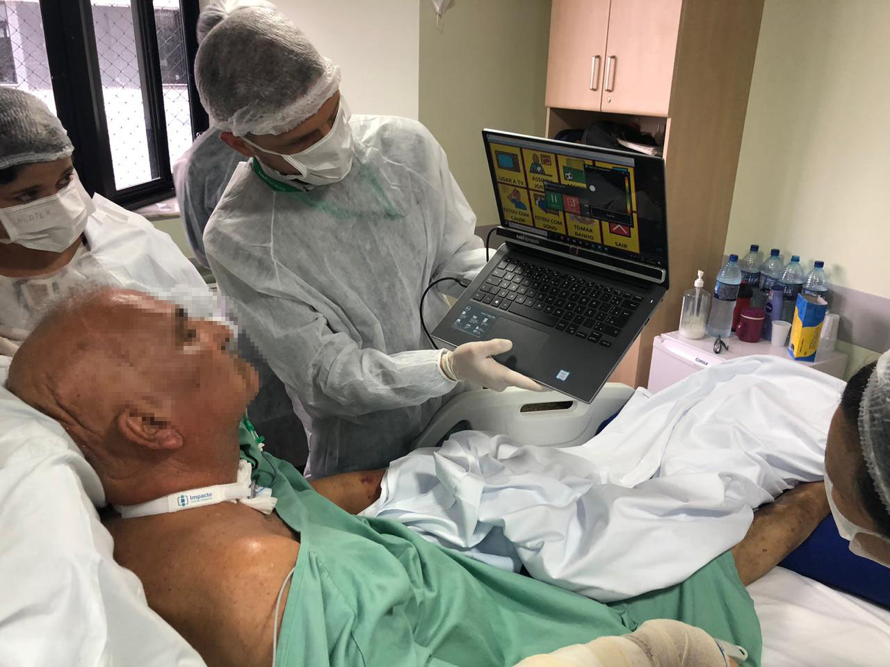
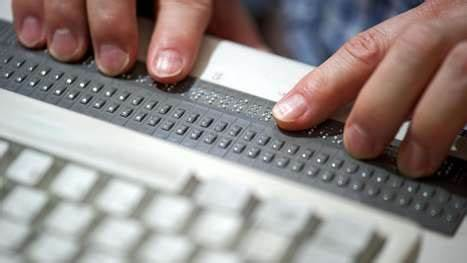
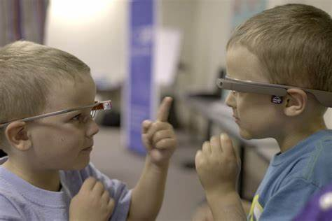
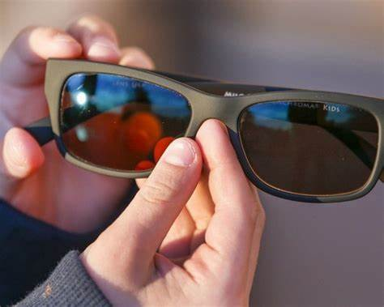
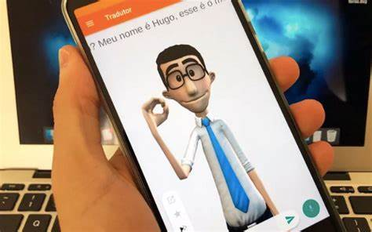

Tecnologias Assistivas imagens
Falar com os olhos A afirmação de que “os olhos falam” é uma maneira simples de explicar como funciona a tecnologia assistiva. Em outras palavras, a tecnologia permite aos pacientes que se encontram incapacitados de se comunicarem verbalmente mas, que possuem o cognitivo preservado, a oportunidade de interagir com a equipe hospitalar e seus familiares, através de um programa instalado em um tablet/ notebook. Por meio desse dispositivo móvel, o paciente consegue dizer o que está sentido e até formular frases.
Uma opção de teclado para deficientes visuais é com sistema braille embutido nas teclas. O teclado em braille é usado pelas pessoas cegas para leitura e escrita.
as pessoas autistas podem aprender as habilidades sociais não apenas em sala de aula ou ambiente clínico, mas também em um ambiente real com feedback em tempo real em diversas situações sociais.
Óculos para daltonismo são óculos com lentes com coloração especial, que ajudam uma pessoa com deficiência na visão das cores a enxergarem as cores de forma mais precisa.
Hand Talk é uma plataforma que traduz simultaneamente conteúdos em português para a língua brasileira de sinais (Libras) e tem por objetivo a inclusão social de pessoas surdas.